Cross Gambling
CrossGambling is a simple gambling game designed for use in text only chat interfaces, particularly, MMORPGs with currency systems. To improve flow and reduce complexity, it relies on the honor system for payouts. It works a little something like this.
One person runs the addon, and requests in group chat that people who wish to join should type 1 in the same chat. This message specifies the “roll amount”, or the maximum possible payout.
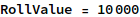
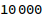
Everyone then rolls a number between 1 and that number, using the chat system to report authentic results to the group as a whole. The lowest roll must pay the highest roll the difference between their rolls.
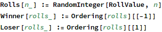
To keep things moving, payment is handled immediately between the 2 parties. Let’s take a look at the properties of this game of chance.
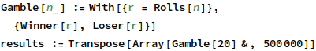
Gamble[n] rolls for n people, and reports the winner and the loser, so if we do that 500,000 times, and then transpose it, we get a list of winners and a list of losers. We can graph both of these together as on a histogram
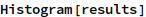
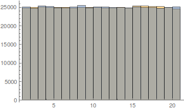
In the abstract, everyone has an equal chance of winning and losing.This makes sense because the rolls are fair and independent. On the other hand, we can also calculate the distribution of payment amounts like so
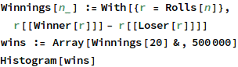
This is much more interesting. Because the winner is always greater than the loser, the average winnings is skewed heavily upwards. For a round to produce small winnings, not only do the winner and lower have to be close, every other player has to be between them. This makes gambling rounds more exciting because the numbers tend to be higher. However, it means that the upper limit must be chosen carefully, because there’s a very good chance winnings will be close to it. In fact, the 50th percentile is very high:
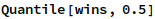
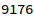
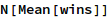
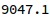
Ultimately, this means that players have to take the upper limits seriously, because more often than not, wins and losses can get very close to the limit.